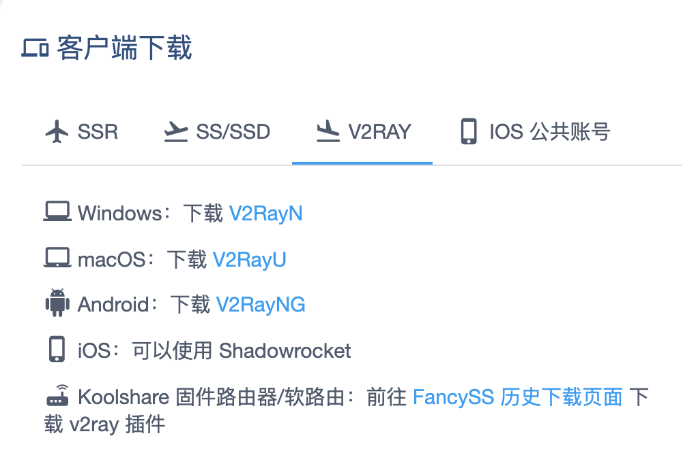
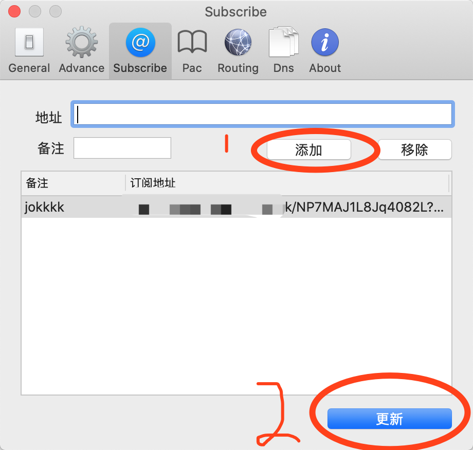
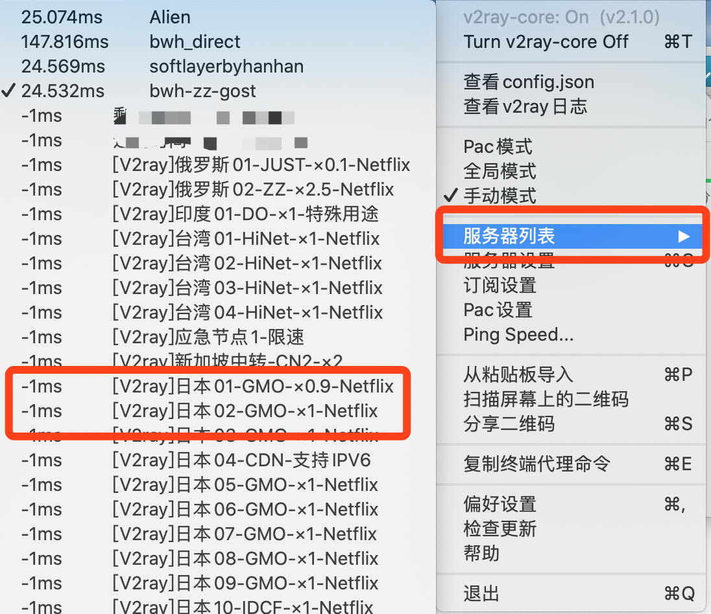

MAC OSX 配置
软件下载
1、登录后默认进入用户中心，向下滑动，找到【客户端下载】

2、点击MACOS 选项卡，切换到MACOS标签
3、点击下载v2ray-U按钮，将软件下载到本机，你会得到一个安装包，像这样
4、双击打开，你会看到安装包的里面的软件包
5、将软件包拖动到你的应用程序目录
6、在docker中点击lanchpad打开应用程序，你会发现你的应用程序列表中多出一个v2rayU的应用程序
节点配置【备用网址】
1、打开v2rayU应用程序，第一次打开如果弹出无法打开的提示
请依次点击launchpad —— 系统偏好设置 —— 安全性与隐私 —— 通用选项卡 —— 允许从以下位置下载的应用 —— 提示【已阻止打开v2rayU】 —— 点击【仍要打开】按钮，输入您的用户密码后即可打开
2、打开后界面没有显示，请在您最上方的状态栏中可以找到一个V的图标。
3、单击小飞机的图标，依次点击 【V 图标】—【订阅设置】，打开编辑订阅窗口。如图所示

4、下面回到我们的网站，【快速添加节点】---【v2ray】下面的地址，点击复制v2ray地址

5、在【订阅设置】窗口，输入刚刚复制的地址和备注
- 订阅地址：输入在网站上获取到的订阅地址
- 备注：输入一个备注，随意即可
6、然后点击更新订阅按钮，提示【成功更新订阅】则订阅成功，节点格式为【节点名称】x【倍率】
7、节点选择。点击状态栏中的【V图形】图标----【服务器列表】----【选择合适您的节点】

节点推荐：
电信用户：选择电信优化或者美国GIA
联通用户：随意
移动用户：香港HGC 或者 电信优化 或者 GIA 或者HKT（白天） 不做保证，可以自己测试一下
其他用户：不做保证， 自己测试
会提示您的剩余流量，指向【剩余流量：xxxx】-- 【我们所向往的-单端口】，会弹出您当前可以使用的节点
选择您想要的节点即可
举例说明：如果您使用了1GB流量，倍率为1.1，那么您账号实际扣减流量为1.1GB
节点后缀为【Netflix】表示该节点可以观看Netflix
8、节点启用。点击状态栏中的【V】图标，依次点击【Turn-v2ray-core-on】启动加速程序。（ps:记得选择pac模式）
使用浏览器访问https://www.google.com 来测试是否正常连接网络